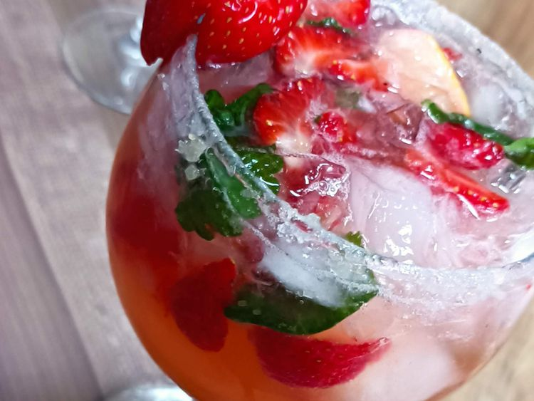

Home
Stawberry Mojito

Description
This strawberry mojito recipe makes a very
refreshing drink for a hot summer day!
I tasted this fruity cocktail at a popular
chain restaurant and decided to try it at home.
I have served it at several different
gatherings, and it has always been given
rave reviews.
Original Recipe
Ingredients
- white sugar, for rimming
- 2 large limes, quartered
- 1/2 bunch mint leaves
- 7 strawberries, quartered
- 1 cup white sugar
- 2 cups club soda
- 1 cup white rum
- 8 cups ice cubes
Steps
-
Pour about 1/2 inch of sugar onto a small,
shallow plate. Run a lime wedge around the
rims of 8 cocktail glasses, then dip the
rims into sugar to coat; set aside.
-
Squeeze all of the lime wedges into a
sturdy glass pitcher. Toss juiced limes
into the pitcher along with mint,
strawberries, and 1 cup sugar. Crush with
a muddler to release strawberry juice and
mint oil. Stir in club soda and rum until
sugar has dissolved.
-
Pour into the prepared glasses over ice
cubes to serve.